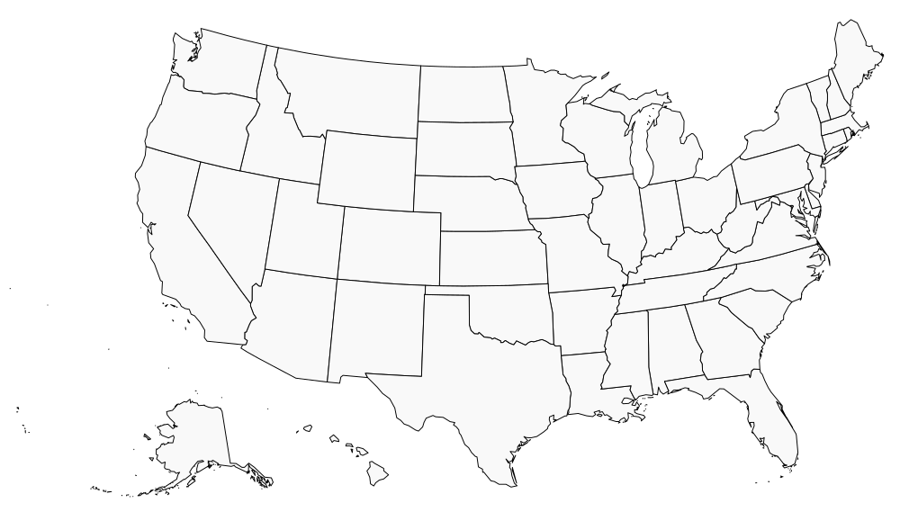

AI is transforming the world. Public concern is overwhelming. Political action hasn't followed. We're here to change that.
STAY TUNED →Public opinion strongly favors AI oversight. But it hasn't translated into political change.
The industry has spent hundreds of millions to keep government away. Ordinary people's concerns — job loss, algorithmic harm, democratic accountability — go unheard.

Political movements don't win in Washington first. They win at home — then build.
We start where people live. City by city, we pass resolutions, grow our base, and demonstrate that the public will for AI accountability is real. Then we scale — to statehouses, then Congress.
We know exactly what we're fighting for. Three policies that would meaningfully constrain AI's worst risks.
We're building something. Check back soon.